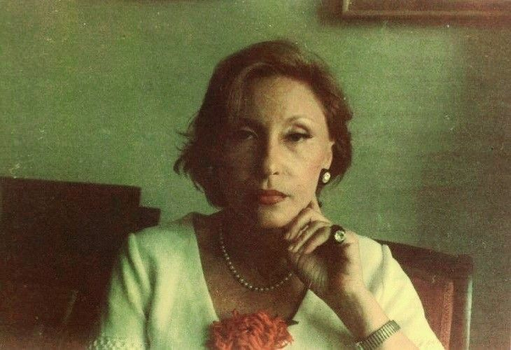

(*Este site é dedicado à celebração da obra de Clarice Lispector. Qualquer dinheiro arrecadado será para instituições de caridade e projetos sociais parceiros.)

"Mergulhe no universo poético, existencial e visceral de uma das maiores vozes da literatura mundial."
Clarice não escrevia apenas histórias; ela costurava o invisível.
Sua escrita transcende a narrativa tradicional para transformar pensamentos,
epifanias e o cotidiano em poesia pura em prosa.
Este espaço é dedicado à celebração de sua obra e à literatura que explora as profundezas da alma humana.
"Não quero ter a terrível limitação de quem vive apenas do que é passível de fazer sentido. Eu não: quero é uma verdade inventada." — Água Viva (1973)
Haia Lispector nasceu em Tchetchelnyk, na Ucrânia, em 10 de dezembro de 1920, enquanto sua família judaica fugia dos conflitos do Império Russo.
Chegou ao Brasil ainda bebê, crescendo no Recife e, mais tarde, radicando-se no Rio de Janeiro.
Ao se naturalizar brasileira, adotou o nome que entraria para a história: Clarice Lispector.
Com apenas 23 anos, revolucionou a literatura brasileira ao publicar o romance Perto do Coração Selvagem (1943).